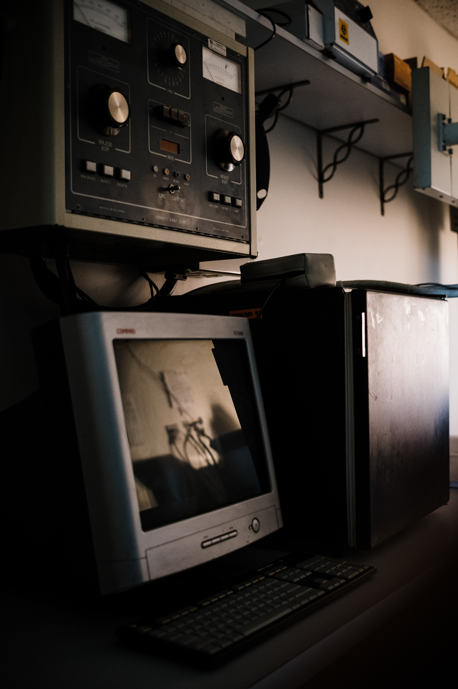

Leading Russian opposition activist Alexei Navalny says he believes President Vladimir Putin was responsible for his poisoning.
"I assert that Putin is behind this act, I don't see any other explanation, " he told German news magazine Der Spiegel in an interview. Germany, where Mr Navalny is recovering, says he was poisoned by a Novichok nerve agent. Its findings were confirmed by labs in France and Sweden. The Kremlin denies any involvement.  Responding to the interview on Thursday, Mr Putin's spokesman said there was no evidence that Mr Navalny had been poisoned with a nerve agent, and said CIA agents were working with the opposition leader.
Mr Navalny collapsed on a flight in Russia's Siberia region on 20 August. He was transferred to the Charity hospital in the German capital Berlin two days later.